Tous ces articles en ligne sur Scilab ont été écrits pour
LINUX MAGAZINE FRANCE par les
développeurs du Scilab Group. Les articles sont sous
licence FDL (Free Documentation
Licence)
La génération de code dans Scicos
Dans l'article paru dans le numéro précédent nous
avions montré en détail quelles sont, dans Scicos
, les différentes étapes necéssaires à
la compilation et la simulation de schéma-blocs (représentation
d'un modèle de systèmes dynamiques). Nous présentons ici
une nouvelle boite à outils dans Scicos,
dédiée à la génération automatique de code,
à partir d'un schéma-blocs.
1 Introduction
Scicos (Scilab Connected Object Simulator,
http://www-rocq.inria.fr/scilab) est un environnement puissant, convivial et
bien sur gratuit, pour la modélisation et la simulation de
systèmes dynamiques hybrides (constitués d'éléments
continus, discrets, événementiels). L'exemple le plus classique
de ces systèmes est un modèle d'environnement physique continu,
commandé par un contrôleur discret, dont la simulation est
l'interprétation d'un algorithme, défini par le compilateur
Scicos (cf. numéro 35 de Linux Magazine) et décrivant le
fonctionnement du système dans son ensemble. Le schéma-bloc de la
figure 1 illustre la représentation d'un tel
système. Le bloc Horloge génère des activations
périodiques, imposant une cadence au contrôleur.
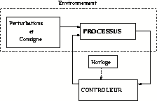
Figure 1: Un système hybride typique
La simulation d'un schéma-bloc hybride
(continu-discret) est obtenue par l'exécution d'un algorithme
décrivant le fonctionnement du système dynamique
(modélisé par le schéma-bloc) dans son ensemble (cf.
numéro 35 de Linux Magazine). Signalons que, de par les interactions
entre les différentes parties d'un système dynamique,
l'algorithme de simulation ne peut pas être décomposable en
entités séparées. Autrement dit, le fonctionnement d'une
partie du système ne peut pas être décrit par une partie
distincte de l'algorithme de simulation. Dans le contexte des applications
industrielles à mettre en oeuvre (après étude), la plupart
du temps, seul le modèle de contrôleur discret est concerné
par une implantation sur un calculateur (architecture embarquée). Le
modèle de contrôleur discret étant défini par un
algorithme lors de la simulation (dans Scicos), il ne reste plus qu'à
générer cet algorithme sous la forme d'un code, pour qu'il puisse
être implanté sur une architecture embarquée. Il existe
maintenant dans Scicos, une nouvelle boîte à outils
dédiée à la génération automatique de code,
qui permet de fournir sous la forme d'un code (en langage C) et de
manière séparée, l'algorithme décrivant n'importe
quelle partie du système. Cette nouvelle fonctionnalité peut
être utilisée à la fois pour accélérer la
simulation Scicos (en remplaçant un super-bloc par un bloc standard) ou
pour générer du code à implanter sur une architecture
embarquée (cf. figure 2).
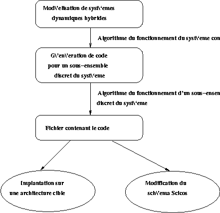
Figure 2: Un même environnement
En principe la génération de code
pourrait concerner aussi bien le système dans son ensemble qu'une de ses
parties, mais puisque dans les faits, les produits visés par les
applications industrielles ne concernent que la mise en oeuvre du modèle
de contrôleur discret, nous avons donc limiter la
génération automatique de code, à des sous-ensembles de
blocs purement discrets. D'ailleurs, comme bien souvent les architectures sont
embarquées (et donc avec des contraintes dimensionnelles), il faut
savoir que le code généré pour des sous-ensembles continu
impose l'intégration d'un solveur numérique nécessitant
des ressources mémoires plus qu'encombrantes pour de telles
architectures.
2 Le pré-traitement du super-bloc
La première étape consiste à isoler
le sous-ensemble de blocs définissant le contrôleur (discret),
dans un super-bloc. Et puisque nous nous limitons à des sous-ensembles
de blocs purement discrets, cela exclu les blocs ayant un état continu
(comme par exemple les bloc de type zcross). Notons aussi que
l'utilisation des blocs ayant une fonction de simulation en langage Scilab (cf.
numéro 19 de Linux Magazine) n'est pas possible pour l'instant. Dans la
pratique, cette nouvelle boîte à outils permet de
générer le code C associé à un super-bloc, mais
aussi de remplacer le super-bloc dans l'éditeur Scicos par un bloc
compilé équivalent. Ainsi, le code obtenu peut être non
seulement implanté sur une architecture embarquée (pour
être utilisé par n'importe quel programme ne nécessitant
pas forcément les routines Scilab), mais aussi réutilisé
dans le schéma bloc Scicos, en vue d'améliorer les performances
de simulation. Pour générer le code de l'algorithme de
fonctionnement spécifique à un sous-ensemble de schéma
bloc, il faut considérer le super-bloc indépendamment des autres
éléments l'environnant. Pour ce faire, il est nécessaire
d'isoler au préalable les entrées et sorties du super-bloc et de
les remplacer automatiquement par des blocs fictifs, appelés
respectivement des ``capteurs'' et des ``actionneurs''. Ceci de manière
à permettre à l'utilisateur, lors de l'implantation du code sur
une architecture embarquée, d'adapter les entrées et sorties du
super-bloc à l'environnement ad hoc.
2.1 Au niveau des ports d'entrées réguliers
Si l'on considère un super-bloc au sein d'un schéma, ses ports
d'entrée régulière reçoivent des signaux
évoluant en fonction d'activations. La première étape de
la génération de code est de considérer le super-bloc au
même titre qu'un schéma Scicos et de le compiler. Le
résultat de la compilation est alors utilisé pour
générer du code en langage C. Le fait est cependant que la
compilation n'est pas toujours rigoureusement concevable car le contenu du
super-bloc n'est pas exactement celui d'un schéma bloc, en particulier
en ce qui concerne les ports d'entrée régulière. Un
schéma bloc ne peut pas avoir des ports d'entrée
régulière extérieurs à son environnement, sans quoi
les activations de ces signaux d'entrées ne sont pas connues et ne
peuvent donc pas être prises en compte à la compilation. Il en va
de même pour les ports d'entrée régulière du
super-bloc qui sont ainsi considérées dans son environnement
extérieur au même titre que leurs activations. C'est pourquoi les
ports d'entrée régulière qui sont alors remplacés
par des blocs fictifs doivent en plus être activés
artificiellement. Ainsi, nous choisissons de relier, systématiquement
chaque ``capteur'', aux ports d'entrée d'activation du super-bloc. En
effet, ne connaissant pas à priori le conditionnement des entrées
régulières, ce choix nous permet de traiter de manière
générale les connections sur les ports du super-bloc. Le
super-bloc de la figure 3 par exemple, après
la phase de traitement est transformé comme sur la figure 4.
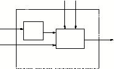
Figure 3: Un simple super-bloc
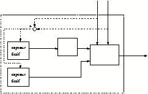
Figure 4: Après la phase de pré-traitement
Notons que dans le code généré, les
appels aux entrées du super-bloc (représentées par des
``capteurs'') sont systématiquement mis en commentaire, afin de
permettre à l'utilisateur d'utiliser facilement les entrées de
son choix.
2.2 Au niveau des ports d'entrée d'activation
Le super-bloc peut posséder zéro, un ou plusieurs ports
d'entrée d'activations. Ce qui nécessite des modifications,
à l'intérieur du super-bloc, en fonction de trois situations
possibles :
- le super-bloc ne possède pas de port d'entrée
d'activation : dans ce cas l'activation est héritée du
schéma bloc original. Pour compiler le super-bloc nous avons besoin
d'introduire un signal d'activation sans quoi le compilateur le
considère comme étant inactif. Nous introduisons un bloc fictif
pour activer les ``capteurs'', de manière à exploiter la notion
de l'héritage à travers les autres blocs constituant le
super-bloc (cf. fig 5). Ce bloc fictif d'activation
est caractérisé par :
- aucun port d'entrée ni de sortie régulière,
- aucun port d'entrée d'activation,
- un unique port de sortie d'activation,
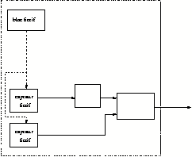
Figure 5: Le super-bloc ne possède pas de port d'entrée
d'activation
- le bloc possède un ou plusieurs port(s) d'entrée
d'activation : de la même manière que
précédemment nous introduisons un bloc fictif pour activer les
``capteurs''. Mais si le bloc possède plusieurs ports d'entrée
d'activation, cette situation est plus délicate car nous devons pouvoir
considérer le cas ou les signaux d'entrées d'activations sont
synchrones. Pour cette raison, toutes les possibilités doivent
être prises en compte. Prenons par exemple le cas où nous avons
deux ports d'entrée d'activations, il faut envisager la
possibilité où l'activation est reçue par le premier port,
la possibilité où elle est reçue par le second port et la
possibilité où deux activations synchrones sont reçues par
les deux ports. C'est la raison pour laquelle dans cette situation nous
ajoutons au super-bloc un bloc fictif caractérisé par :
- aucun port d'entrée ni de sortie régulière ;
- aucun port d'entrée d'activation ;
- 2n-1 ports de sortie d'activation,
avec n : le nombre de ports d'entrée d'activation du super-bloc
(cf. fig 6). En effet, prenons l'exemple où
le super-bloc possède 2 ports d'entrée d'activation, cela
signifie qu'il y a trois possibilités à considérer : soit
il est activé par l'un ou l'autre des ports, soit par les deux en
même temps. Ce qui fait que le bloc fictif a 3 ports de sortie
d'activation, le troisième correspondant à l'activation synchrone
des ports d'entrée du superbloc. Dans ce cas il faut remplacer les
liaisons d'activation à l'intérieur du super-bloc, en respectant
un codage binaire, à l'image de la figure 6.
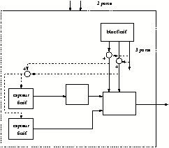
Figure 6: Le super-bloc possède plus d'un port d'entrée
d'activation
Ces modifications sont effectuées de manière automatique pendant
la phase de génération de code, le processus de transformation
étant complètement transparent pour l'utilisateur.
3 La procédure pour la génération de code
La génération de code dans Scicos est une procédure qui a
pour résultat la création des deux fichiers caractérisant
systématiquement chaque bloc Scicos (cf. numéro 19 de Linux
Magazine) :
- une fonction d'interface graphique (fonction Scilab),
créée sur mesure et prenant compte des différents ports du
super-bloc.
- une fonction de simulation (procédure C), inspirée
principalement de la procédure de simulation ``doit'' (cf.
numéro 35 de Linux Magazine) et constituant le code
généré. La fonction de simulation est une
procédure réalisant la commande dynamique du bloc. Pour la
plupart des blocs Scicos, cette procédure contient de simples appels
à des bibliothèques numériques de Scilab. C'est le cas par
exemple du bloc ``GAIN'' qui appelle une procédure de calcul de produit
matrice-par-vecteur dans Scilab. Une fonction de simulation
générée automatiquement peut être cependant beaucoup
plus complexe. En particulier si le super-bloc contient des blocs de type
synchro pour le conditionnement (If-Then-Else, etc...). La
fonction de simulation générée contient en
général des appels à des procédures de simulation
des différents blocs contenus dans le super-bloc.
Dans la fenêtre de l'éditeur Scicos, la génération
de code s'exécute par un nouveau bouton (Code) dans la barre du
menu Generation. Après avoir placé le schéma bloc
désiré dans un super-bloc, l'action sur ce bouton permet de
générer le code correspondant et de remplacer le super-bloc par
un nouveau bloc standard ``équivalent''. Dès que l'utilisateur
désigne par un clic de souris le super-bloc concerné, l'action
sur le bouton Code lance la fonction Scilab
``do_GenerateCode''. Le résultat obtenu est la transformation
du super-bloc par un nouveau bloc standard ``équivalent'', qui
possède le même nombre de ports d'entrée-sortie
(régulière et d'activations) que le super-bloc. Pour
réaliser cette substitution, deux fonctions sont
générées :
- une fonction de simulation (langage C), constituant le code
généré
- une fonction d'interface graphique (langage Scilab)
La fonction ``do_GenerateCode'', représentée à la
figure 7, exécute les étapes
suivantes :
- la vérification que le super-bloc est compilable
séparément : il ne possède pas de port de sortie
d'activations, ne contient pas de blocs activés en continu.
- le pré-traitement du contenu du super-bloc (ajout de bloc fictif,
remplacement des blocs d'entrée/sortie par des capteurs/actionneurs
etc...).
- la compilation du sous-ensemble du schéma bloc, constituant le
super-bloc. Cette étape est exécutée par les fonctions
Scilab (``c_pass1'' et ``c_pass2''), afin de
générer les tables de programmation nécessaires à
la construction de la fonction de simulation du nouveau bloc.
- la génération de la fonction d'interface graphique du
nouveau bloc, par la fonction Scilab ``c_make_gui'',
- la génération de la fonction de simulation par la fonction
Scilab ``c_make_main'', obtenue en trois parties :
- le fichier ``c_make_calcul.sci'' : pour la constitution du corps
de la fonction de simulation,
- le fichier ``c_make_doit1.sci'' : pour la mise à jour de
la sortie du bloc (flag 1),
- le fichier ``c_make_doit2.sci'' : pour la mise à jour de
l'état discret du bloc (flag 2).
- la compilation de la fonction de simulation du nouveau bloc et
son lien dynamique avec la session Scicos en cours, pour permettre la prise en
compte dans la simulation, des modifications du schéma bloc Scicos.
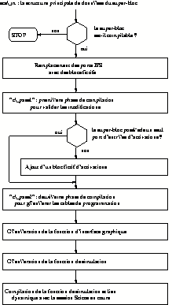
Figure 7: La fonction do_generate_code.sci
3.1 Un exemple simple
Observons le schéma bloc simple de la figure 8. Le bloc Num(z)/Den(z) réalise un
filtre numérique décrit par sa transformée en ``z''
associée. Supposons que nous voulons réunir ce bloc et le bloc
sin pour former un seul bloc dans le schéma Scicos, et pour
générer le code adapté. Cet exemple est bien entendu trop
simple pour être d'un réel intérêt, mais nous
l'utilisons seulement pour illustrer l'idée. Dans cet exemple le
super-bloc et le bloc Modulo Counter ont le même
conditionnement. Les modifications apportées par la
génération de code, font que le bloc sin hérite
des activations du bloc Modulo Counter. L'activation du bloc sin
est donc identique avant et après la génération de
code. Après avoir placé les deux blocs dans un super-bloc en
utilisant le bouton Region to Super block du menu File, il
suffit d'abord de cliquer sur le bouton Generation dans le menu
Code (cf. figure 8), puis sur le
super-bloc. Sur la figure 9 on observe le
résultat obtenu : le super-bloc est ``compilé'' et
remplacé par un nouveau bloc standard appelé foo dans
cet exemple (l'utilisateur peut spécifier le nom de son choix).
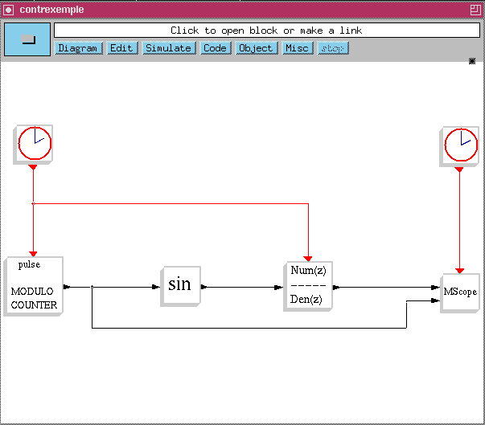
Figure 8: Un exemple très simple.
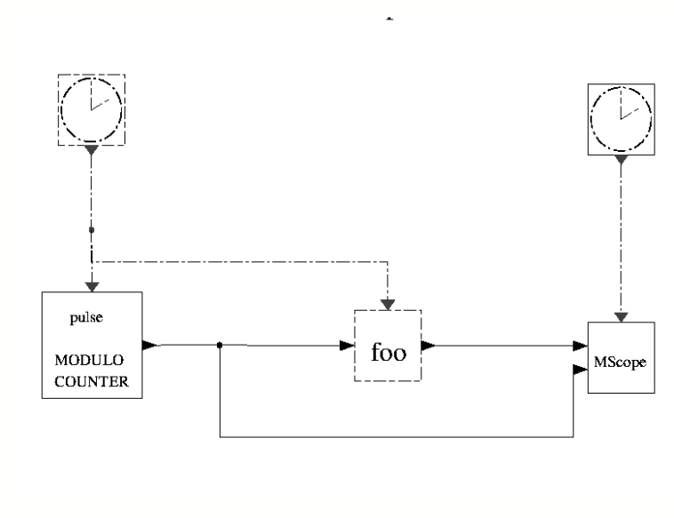
Figure 9: Le schéma après compilation du super-bloc.
Le nouveau schéma Scicos doit bien entendu
avoir un comportement qui doit être complètement équivalent
au précédent lors de la simulation. Sur la figure 10 est illustré le résultat de simulation qui
est bien sur identique, avant et après les modifications.
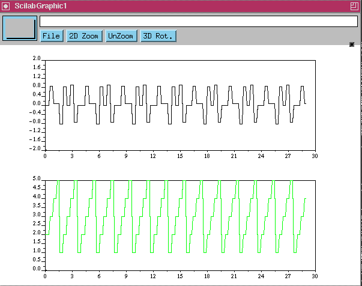
Figure 10: Le résultat de simulation.
Le fichier ``foo.c'' obtenu contient le code
généré, constitué de la déclaration des
différents paramètres et du coeur du programme, comprenant les
procédures ``foo'', ``foomain1'' et
``foomain2''. Nous présentons pour le schéma de la
figure 9 le coeur du programme
généré, afin de le commenter.
3.1.1 La procédure ``foo''
Cette procédure indique que lorsque le nouveau bloc foo est
activé, il doit mettre à jour :
- ses registres de sortie régulière, en faisant appel à
la procédure ``foomain1'' ;
- son registre d'état discret, en faisant appel à la
procédure ``foomain2''.
/* SCILAB Computational function */
/* Copyright INRIA */
/* Generated by Code_Generation toolbox of Scicos with scilab-2.6 */
/* date : Year 2001, Month 12, Day 20 */
#include <stdio.h>
#include <string.h>
#include "/home/djenidi/scilab-2.6/routines/machine.h"
#include "/home/djenidi/scilab-2.6/routines/sun/link.h"
#include "/home/djenidi/scilab-2.6/routines/scicos/scicos.h"
.
.
.
.
{
/* Copyright INRIA */
/* Scicos block simulator */
/* Parameter adjustments */
--y1;
--ipar;
--rpar;
--tvec;
--z;
/* Function Body */
z[3]=u1[1];
totalnevprt= *nevprt;
if (*flag == 1) { /* update outputs */
foomain1(&(z[1]),t);
}
else if (*flag == 2) { /* update discrete states */
foomain2(&(z[1]),t);
}
if (*ierr != 0) {
return 0;
}
y1[1]=z[4];
return 0;
} /* foo */
Dans les procédures suivantes, pour pouvoir appeler des routines
écrites en fortran, nous utilisons la directive de compilation C2F
qui se trouve dans le fichier machine.h.
3.1.2 La procédure foomain1
La procédure foomain1 fait appel à la procédure
fooddoit1 qui elle même consiste en des appels aux
procédures de simulation dsslti (bloc Num(z)/Den(z)),
capteur1 (entrée régulière du bloc foo)
et sinblk (bloc sin), afin de mettre à jour les
registres de sortie régulière. Signalons qu'en ce qui concerne
capteur1, l'appel à sa procédure de simulation a
été mis automatiquement en commentaire afin de permettre à
l'utilisateur de faire appel à l'entrée de son choix. Notons que
pour assurer sa récursivité, la procédure fooddoit1
fait aussi appel à la procédure fooeddoit1 dont le
contenu lui est identique.
int foomain1(double *z, double *t)
{
double *rpar;
integer *nrpar, *ipar, *nipar;
integer pointi[ ] = {0};
fooddoit1(
&(z[0]),&(zptr[0]),
&t0,&(tevts[0]),
&(evtspt[0]),&(nevts[0]),&(pointi[0]),
&(outptr[0]),
&(clkptr[0]),&(ordptr[0]),&(ordclk[0]),
&nordcl,&(rpar[0]),&(ipar[0]),
&(rdfunptr[0]),&(funtyp[0]),&(z[2]),
&(z[7]));
}
/* ddoit1.c */
/* Subroutine */ int fooddoit1( z, zptr, told,
tevts, evtspt, nevts, pointi, outptr,
clkptr, ordptr, ordclk, nordcl,
rpar, ipar, funptr, funtyp, outtb, iwa)
double *z;
integer *zptr;
double *told, *tevts;
integer *evtspt, *nevts, *pointi, *outptr;
integer *clkptr, *ordptr, *ordclk, *nordcl;
double *rpar, *outtb;
integer *ipar, *funptr, *funtyp;
integer *iwa;
{
/* System generated locals */
integer ordclk_dim1, ordclk_offset, i1, i2, i3;
.
.
.
.
++iwa[9];
iwa[iwa[9]] = keve;
switch(keve) {
case 1:
flag = 1;
nevprt=1;
args[0]=&(outtb[1]);
args[1]=&(outtb[3]);
C2F(dsslti) (&flag, &nevprt,told, &(w[1]), &(x[1]), &nrd_0,
&(z[1]),&nrd_1, tvec, &ntvec, &(rpar[1]), &nrd_4, &(ipar[1]), &nrd_0
, (double *)args[0], &nrd_1, (double *)args[1], &nrd_1);
if(flag < 0 ) {
*ierr = 5 - flag;
return 0;
}
/* flag = 1;
nevprt=1;
args[0]=&(outtb[1]);
args[1]=&(outtb[2]);
C2F(capteur1) (&flag, &nevprt,told, &(w[1]), &(x[1]), &nrd_0, &(z[1]),
&nrd_0, tvec, &ntvec, &(rpar[1]), &nrd_0, &(ipar[1]), &nrd_1
, (double *)args[0], &nrd_0, (double *)args[1], &nrd_1);
if(flag < 0 ) {
*ierr = 5 - flag;
return 0;
}*/
flag = 1;
nevprt=1;
args[0]=&(outtb[2]);
args[1]=&(outtb[1]);
C2F(sinblk) (&flag, &nevprt,told, &(w[1]), &(x[1]), &nrd_0, &(z[1]),
&nrd_0, tvec, &ntvec, &(rpar[1]), &nrd_0, &(ipar[1]), &nrd_0
, (double *)args[0], &nrd_1, (double *)args[1], &nrd_1);
if(flag < 0 ) {
*ierr = 5 - flag;
return 0;
}
break;
}
switch(keve) {
case 1:
break;
}
}
3.1.3 La procédure ``foomain2''
La procédure foomain2 fait appel à la procédure
fooddoit2 qui elle même consiste en des appels à la
procédure de simulation dsslti du bloc Num(z)/Den(z),
afin de mettre à jour le registre d'état discret. Comme
précédement pour la procédure fooddoit1, pour
assurer sa récursivité la procédure fooddoit2
fait aussi appel à la procédure fooeddoit2 dont le
contenu lui est identique.
int foomain2(double *z, double *t)
{
double *rpar;
integer *nrpar, *ipar, *nipar;
integer pointi[ ] = {0};
fooddoit2(
&(z[0]),&(zptr[0]),
&t0,&(tevts[0]),
&(evtspt[0]),&(nevts[0]),&(pointi[0]),
&(outptr[0]),
&(clkptr[0]),&(ordptr[0]),&(ordclk[0]),
&nordcl,&(rpar[0]),&(ipar[0]),
&(rdfunptr[0]),&(funtyp[0]),&(z[2]),
&(z[7]));
}
/* ddoit1.c */
/* Subroutine */ int fooddoit2( z, zptr, told,
tevts, evtspt, nevts, pointi, outptr,
clkptr, ordptr, ordclk, nordcl,
rpar, ipar, funptr, funtyp, outtb, iwa)
double *z;
integer *zptr;
double *told, *tevts;
integer *evtspt, *nevts, *pointi, *outptr;
integer *clkptr, *ordptr, *ordclk, *nordcl;
double *rpar, *outtb;
integer *ipar, *funptr, *funtyp;
integer *iwa;
{
/* System generated locals */
integer ordclk_dim1, ordclk_offset, i1, i2, i3;
.
.
.
.
/* Function Body */
/* . update continuous and discrete states on event */
if (iwa[9] == 0) {
return 0 ;
}
i1 = iwa[9];
for (i = 1; i <= i1; ++i) {
keve = iwa[i];
switch(keve) {
case 1:
flag = 2;
nevprt=1;
args[0]=&(outtb[1]);
args[1]=&(outtb[3]);
C2F(dsslti) (&flag, &nevprt,told, &(w[1]),
&(x[1]), &nrd_0, &(z[1]), &nrd_1, tvec, &ntvec, &(rpar[1]), &nrd_4,
&(ipar[1]), &nrd_0 , (double *)args[0], &nrd_1, (double *)args[1],
&nrd_1);
if(flag < 0 ) {
*ierr = 5 - flag;
return 0;
}
break;
}
}
} /* ddoit2 */
}
3.2 Les problèmes en matière d'héritage
Un bloc standard peut être activé aussi
bien par héritage des activations de ses entrées
régulières ou directement par ses ports d'entrées
d'activations. Un schéma bloc (super-bloc) peut cependant contenir des
blocs qui sont en partie activés par héritage et d'autres par
activation directe. Compiler de tels schémas peut dans certains cas
mener à des erreurs chronométriques, en particulier lorsque des
blocs sont activés par héritage, de l'extérieur du
super-bloc. Dans ce cas, il est clairement impossible de construire un bloc
standard ayant exactement la même commande que le super-bloc. Prenons
pour exemple le schéma de la figure 11, qui est une version légèrement
modifiée de notre exemple précédent. Ici le bloc sin
est activé par héritage des activations à travers le
premier bloc Clock (celui qui active le bloc MODULO COUNTER),
tandis que le filtre numérique est activé par le second bloc
Clock. Le résultat de simulation dans ce cas est donné
dans la figure 12 pour un choix particulier de la
fréquence et de la phase des horloges.
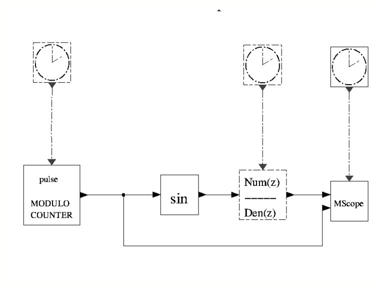
Figure 11: Un exemple de problème chronométrique.
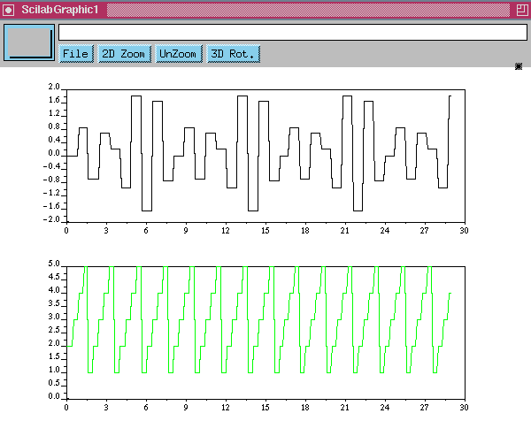
Figure 12: Résultats de simulation du schéma de la figure
11.
Après la génération de code, les
deux blocs sin et le filtre numérique (placé dans un
super-bloc) sont remplacés par un seul bloc standard (foo) (cf.
figure 13. Le traitement de la boîte
à outils considère dans ce cas que le nouveau bloc
créé est activé à travers un port d'entrée
d'activation, et non par héritage. Cela implique que le schéma
Scicos modifié ne doit pas avoir exactement la même commande
dynamique qu'auparavant, comme on peut le voir par une simple simulation (cf.
figure 14). Dans ce cas, il n'y a tout simplement
aucune solution pour remplacer le super-bloc par un seul bloc standard et
préserver la commande dynamique dans chaque situation ; la
génération de code a seulement donnée le meilleur choix
possible.
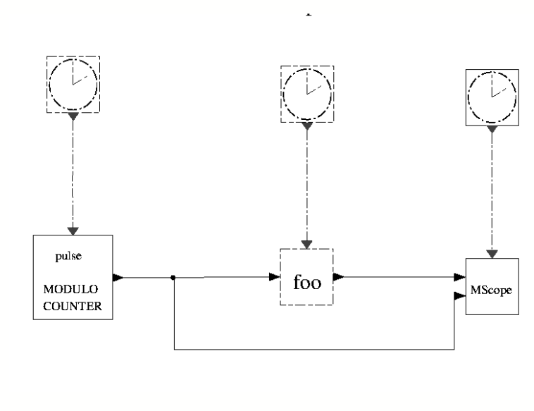
Figure 13: Schéma modifié.
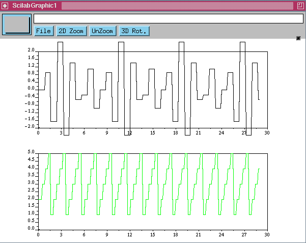
Figure 14: Résultats de simulation correspondant au schéma
modifié.
Ce type de problème n'est pas rencontré
souvent car pour cela le schéma Scicos doit contenir au moins deux
horloges indépendantes activant les blocs à l'intérieur du
sous-ensemble en question. Et même lorsqu'il y a présence de plus
d'un bloc Clock, souvent une simple inspection visuelle permet de
s'assurer qu'aucun problème chronométrique ne se produise
après la compilation du super-bloc. Mais il existe des schémas
complexes pour lesquels il serait trop fastidieux de faire une telle
inspection. Ceci nous amène à proposer une autre boîte
à outils : Check bientôt disponible sur le site
http://www-rocq.inria.fr/scilab, donnant la possibilité à
l'utilisateur, de détecter automatiquement si deux blocs
connectés ne sont pas activés par la même source
d'activation. De cette manière libre cours est laissé à
l'utilisateur pour apprécier les effets du conditionnement
signalé, avant d'envisager la génération de code.
4 Un exemple
Etudions maintenant un exemple légèrement
plus complexe, traduisant en l'occurrence l'algorithme exprimé par le
programme Scilab suivant :
for i = 1 : n
if sin(i) > 0 then
S = S + 1
else
for j = 1 : n
if sin(j)^2 > 0 then
S = S - 1
end
end
end
end
A partir de la définition de cet algorithme, nous construisons un
schéma Scicos pour le mettre en oeuvre. Cela peut être
réalisé dans Scicos de différentes manières ;
l'algorithme peut même être modélisé par un seul
bloc. Néanmoins, nous choisissons ici d'utiliser uniquement des blocs de
base existants et des blocs créés spécifiquement (
User's blocks). Notons d'ailleurs que les User's blocks peuvent
avoir une procédure écrite en langage Fortran (cf. 4.1refprofor) ou en langage C (cf. 4.2.
4.1 Construction d'une procédure Fortran pour un
User's block
Pour créer une procédure en Fortran, il
suffit de s'inspirer des procédures existantes dans le répertoire
''scilab-2.6/routines/scicos''. Nous donnons ici l'exemple d'une
procédure pour un compteur incrémental avec remise à
zéro ''TIMER'':
subroutine rdtimer(flag,nevprt,t,xd,x,nx,z,nz,tvec,ntvec, &
rpar,nrpar,ipar,nipar,y,ny)
c Scicos block simulator
c timer with gain and iteration number
double precision t,xd(*),x(*),z(*),tvec(*),rpar(*)
double precision y(*)
integer flag,nevprt,nx,nz,ntvec,nrpar,ipar(*)
integer nipar,ny
common /dbcos/ idb
if(idb.eq.1) then
write(6,'(''rdtimer t='',e10.3,'' flag='',i1,''nevprt='',i1)') t,flag,nevprt
endif
if(flag.eq.4.or.flag.eq.6) then
y(1)=1.0d0
endif
if(rpar(2).gt.y(1).and.nevprt.eq.3.and.flag.eq.2) then
y(1)=y(1)+rpar(1)
elseif(rpar(2).eq.0.0d0.and.nevprt.eq.3.and.flag.eq.2) then
y(1)=y(1)+rpar(1)
elseif(rpar(2).le.y(1).and.nevprt.eq.3.and.rpar(2).ne.0.0d0) then
write(6,*)y(1)
y(1)=0.0d0
endif
end
4.2 Construction d'une procédure C pour un User's
block
Pour la création d'une procédure en langage
C, il faut veiller à rajouter C2F devant le nom de la
procédure. C2F est définit dans la bibliothèque
machine.h qu'il faut aussi inclure, sans oublier de bien indiquer
l'endroit (<chemin>) où Scilab est installé.
L'exemple donné ci-dessous concerne un bloc standard qui calcule en
sortie le sinus au carré de son entrée réguliere (bloc
sin2).
#include <math.h>
#include "<chemin>/scilab-2.6/routines/machine.h"
/* Copyright INRIA */
/* Scicos block simulator */
/* Element wise som^2 */
void C2F(sinblk2)(flag, nevprt, t, xd, x, nx, z, nz, tvec,
ntvec, rpar, nrpar, ipar, nipar, u, nu, y, ny)
double *t,xd[],x[],z[],tvec[];
int *flag,*nevprt,*nx,*nz,*ntvec,*nrpar,ipar[],*nipar,*nu,*ny;
double rpar[],u[],y[];
{
/* Local variables */
int i;
/* Parameter adjustments */
--y;
--u;
--ipar;
--rpar;
--tvec;
--z;
--x;
--xd;
/* Function Body */
for (i = 1; i <=*nu ; ++i) {
y[i] = pow(sin(u[i]),2);
/* L15: */
}
}
Le schéma représenté à la figure 15 montre l'utilisation des blocs synchro, pour
l'exécution du conditionnement, ainsi que les User's blocks
TIMER et sin
2.
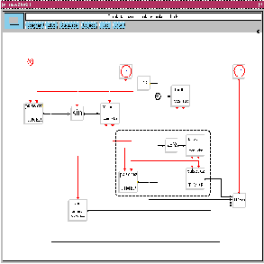
Figure 15: Le schéma Scicos exécutant l'algorithme.
Nous plaçons les 4 blocs constituants la boucle des
itérations j dans un super-bloc, pour lequel la compilation
nous donne le schéma Scicos de la figure 16
(le code C d'exécution est généré est placé
dans le fichier foo.c).
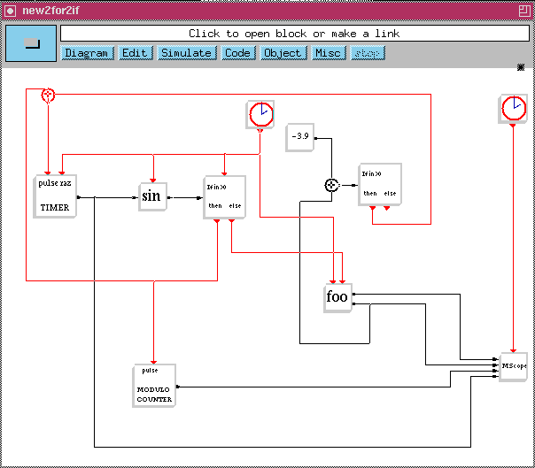
Figure 16: Le schéma Scicos modifié.
Dans cet exemple, la simulation confirme que nous
obtenons, avant et après la génération de code, le
même résultats (cf. figure 17).
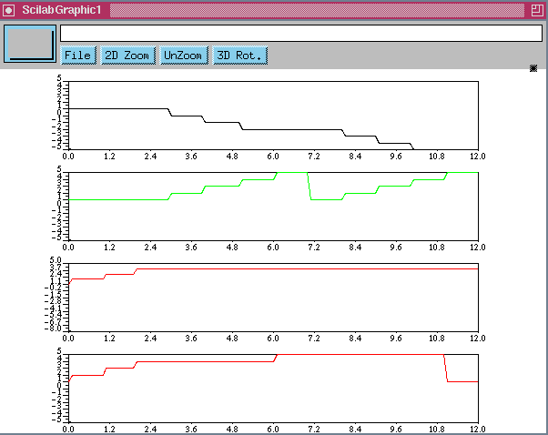
Figure 17: Même résultat dans les deux cas.
5 Le mode d'emploi
L'utilisation de la boîte à outils pour la
génération automatique de code nécessite une installation
spécifique, pour cela toutes les informations nécessaires sont
aussi disponibles sur le site :
http://www-rocq.inria.fr/scilab/contributions.html
5.1 L'installation
Pour installer cette boîte à outils l'administrateur de la machine
doit exécuter, une fois pour toute, l'instruction suivante dans la
fenêtre Scilab : exec <chemin> /builder.sce Cette opération
nécessite un compilateur C (pour les systèmes Unix/Linux) ou un
compilateur VisualC++ (pour les systèmes Windows), ainsi que les droits
d'écriture dans :
- <chemin> /src afin de générer le fichier
Makefile et les fichiers objets (*.o, pour les
systèmes Unix/Linux) ou (*.obj, *dll, ..., pour les systèmes
Windows)
- <chemin> /macros afin de générer les fichiers
binaires (*.bin) ainsi que les fichiers names et
lib.
5.2 L'utilisation
Pour utiliser cette boîte à outils, aussi bien sur les
systèmes Unix/Linux que les systèmes Windows, l'utilisateur doit
exécuter l'instruction suivante : exec <chemin>/loader.sce, dans
Scilab et avant d'utiliser la boîte à outils. Il peut aussi
l'écrire dans son fichier de démarrage .scilab pour un
chargement automatique. On obtient ainsi dans la barre de menu un nouveau
bouton Code qui donne l'accès à une unique
sélection : Generation. D'un simple clic sur cette
dernière, suivi d'un autre clic pour désigner le super-bloc
concerné et le tour est joué ! Le super-bloc est
transformé en un bloc, pour lequel ont été
générées et chargées les fonctions d'interface
graphique et de simulation.
5.3 Le contenu de la boîte à outils :
La boîte à outils pour la génération automatique de
code est constituée des répertoires et fichiers suivants :
- README : le fichier du mode d'emploi
- loader.sce : le fichier d'installation
- builder.sce : le fichier pour construire la bibliothèque
- src : le répertoire des sous programmes Fortran et C
- macros : le répertoire des fonctions Scilab, qui contient :
- *.sci : les versions sources
- *.bin : les versions binaires pré-compilées
(générées)
- names : le fichier contenant la table des fonctions
(généré)
- lib : le fichier de sauvegarde de la bibliothèque binaire Scilab
(généré)
- man : le répertoire de l'aide en ligne, qui contient :
- Makefile : le fichier de construction de l'aide en ligne
- *.man : le fichier d'aide nroff
- *.cat : le fichier généré
- whatis : Une brève description des fonctions
Rachid Djenidi
Scilab Group
scilab@inria.fr
http://www-rocq.inria.fr/scilab/
This document was translated from LATEX
by HEVEA.